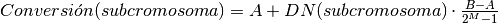

BinaryRepresentation (script)¶
Contiene todas las funcionalidades requeridas para que se pueda hacer uso de una
codificación de tipo Binary (ó Binaria); ésto significa que los alelos que
conforman al cromosoma serán exclusivamente 0 ó 1.
-
binary_to_decimal(chromosome)¶ - Método que convierte un número binario a decimal.Este es un ejemplo de método que se puede agregar adicionalmente siempre y cuando se implementen las funciones que se han mencionado ya.
Parameters: chromosome (List) – El cromosoma sobre el cual se hará la evaluación. Returns: La representación en decimal del número binario. Return type: Integer
-
calculate_length_subchromosomes(vector_variables, number_of_decimals, representation_parameters)¶ - Esta es la implementación del método para la codificación en binario. A grandes rasgos primero se determina el número de bits que se deben tomar en cuenta para representar la magnitud de una determinada variable de decisión.Haciendo esto para todas las variables de decisión se obtienen las longitudes de todos los subcromosomas.Esta función se implementa obligatoriamente.
-
create_chromosome(length_subchromosomes, vector_variables, number_of_decimals, representation_parameters)¶ - Crea un cromosoma binario completo con base en las longitudes de los subcromosmas.Este método debe implementarse obligatoriamente.
-
evaluate_subchromosomes(complete_chromosome, length_subchromosomes, vector_variables, number_of_decimals, representation_parameters)¶ - Realiza una evaluación de los subcromosomas para la codificación binaria (ó Binary).En términos generales se toma cada porción del subcrosomoma (tomando en cuenta que previamente se calcularon sus longitudes) y así se convierte a decimal, considerando la expansión numérica.Posteriormente para obtener el número final se hace lo siguiente:

Donde:A es el límite inferior que toma la variable de decisión.B es el límite superior que toma la variable de decisión.M es la longitud del subcromosoma asociado a la variable de decisión.DN (Decimal number) es el número en decimal del subcromosoma asociado a la variable de decisión.